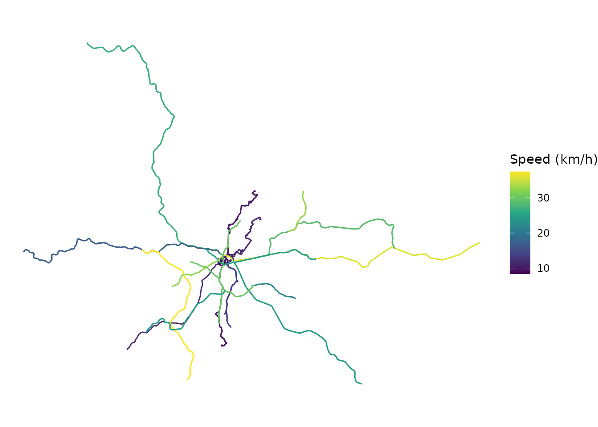
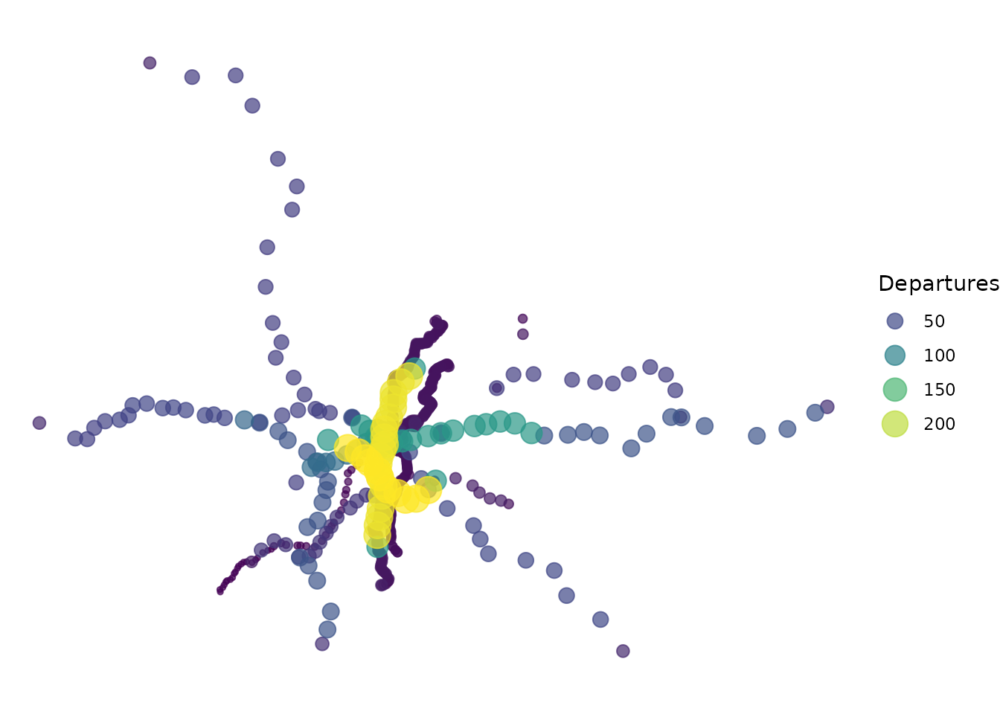

Maps are often the best way to get a sense of a transit network:
where its routes run, how fast they are and which stops are the busiest.
gtfstools includes a few functions that convert the
tables of a GTFS feed into spatial sf objects, which can be
easily mapped with ggplot2. This vignette will show you
how to map a feed using the following functions:
-
get_shapes_geometry(): converts theshapestable intoLINESTRINGs; -
get_route_geometry(): returns the distinct trip geometries of each route; -
get_stops_geometry(): converts thestopstable intoPOINTs.
We will start by loading the packages required by this demonstration into the current R session:
Mapping the transit network
get_shapes_geometry() converts the shapes
table into an sf object with the geometry of each shape.
Mapping them gives an overview of the whole network described in the
feed. Let’s see how that works using São Paulo’s feed:
path <- system.file("extdata/spo_gtfs.zip", package = "gtfstools")
gtfs <- read_gtfs(path)
shapes <- get_shapes_geometry(gtfs)
ggplot() +
geom_sf(data = shapes) +
theme_void()Mapping routes by speed
Spatial objects become more interesting when combined with other
information about the feed. Let’s map the routes by their average speed.
First, we calculate the speed of each trip with
get_trip_speed(), and take the simple mean of the speeds of
the trips of each route (frequency-based trips count once, regardless of
their headway):
trip_speed <- get_trip_speed(gtfs)
route_speed <- trip_speed |>
dplyr::group_by(route_id) |>
dplyr::summarise(
speed = mean(speed, na.rm = TRUE),
.groups = "drop"
)
head(route_speed)
#> # A tibble: 6 × 2
#> route_id speed
#> <chr> <dbl>
#> 1 2002-10 8.36
#> 2 2105-10 9.95
#> 3 2161-10 11.4
#> 4 4491-10 13.6
#> 5 5290-10 9.87
#> 6 6450-51 11.5Then, we join these speeds to the geometries returned by
get_route_geometry(), which includes one row for each
distinct geometry of a route’s trips (e.g. one for each direction):
# the sf object comes first, so that the result is also an sf object
routes <- get_route_geometry(gtfs) |>
dplyr::inner_join(route_speed, by = "route_id")
ggplot() +
geom_sf(data = routes, aes(color = speed)) +
scale_color_viridis_c(name = "Speed (km/h)") +
theme_void()
Mapping stops by frequency
Similarly, we can map the stops by the number of departures from each
one of them in the morning peak, calculated with
get_stop_frequency(). Since the departures are counted by
service, we first keep only the services that run on mondays with
filter_by_weekday(), and then add up the departures of each
stop:
weekday_gtfs <- filter_by_weekday(gtfs, "monday")
stop_frequency <- get_stop_frequency(
gtfs = weekday_gtfs,
from = "07:00:00",
to = "09:00:00"
)
stop_frequency <- stop_frequency |>
dplyr::group_by(stop_id) |>
dplyr::summarise(
departures = sum(departures),
.groups = "drop"
)get_stops_geometry() converts the stops into points, to
which we join the number of departures. The size and the color of each
stop vary with its number of departures:
stops <- get_stops_geometry(gtfs, stop_id = stop_frequency$stop_id)
stops <- stops |>
dplyr::inner_join(stop_frequency, by = "stop_id")
# draws the busiest stops on top
stops <- stops |>
dplyr::arrange(departures)
ggplot() +
geom_sf(
data = stops,
aes(color = departures, size = departures),
alpha = 0.7
) +
scale_color_viridis_c(guide = "legend") +
labs(color = "Departures", size = "Departures") +
theme_void()
Note:
The speeds and frequencies used above are just two examples of the information that can be extracted from a feed. For more information on these and other functions, please see the querying vignette and the function reference.